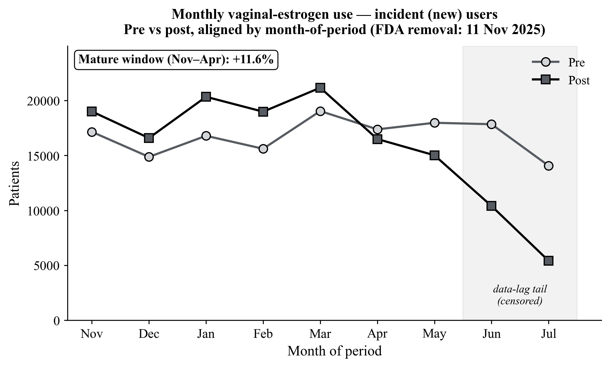
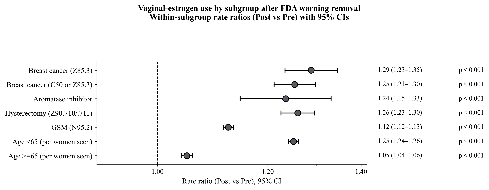
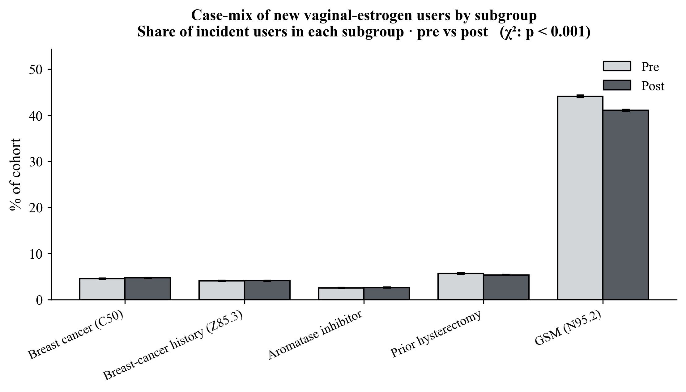
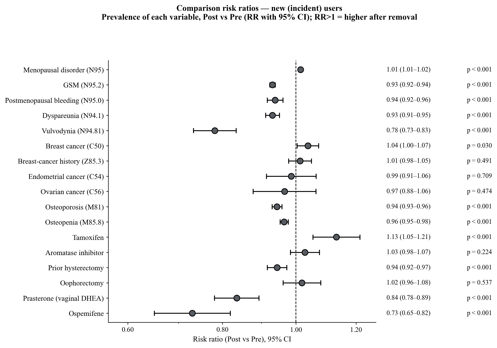
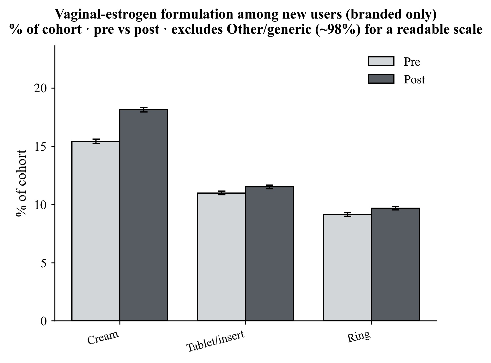
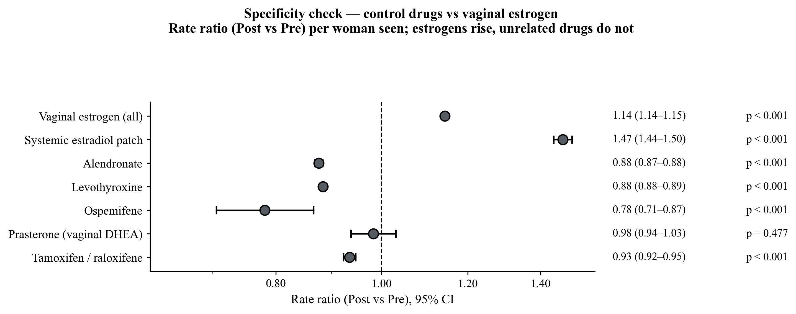
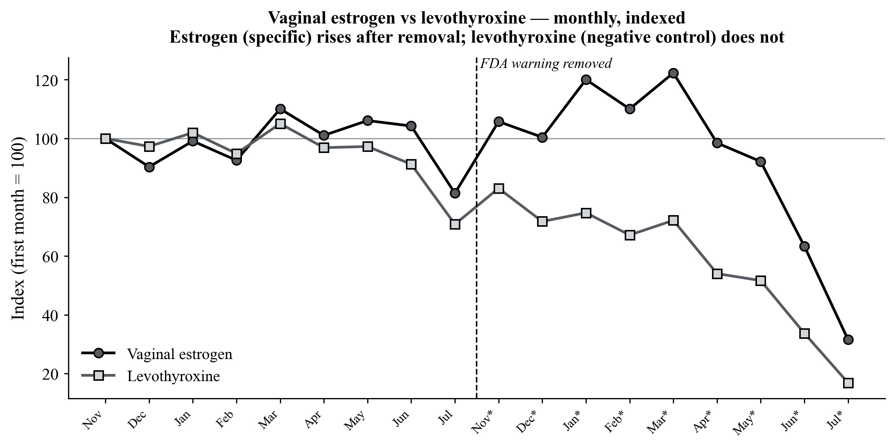
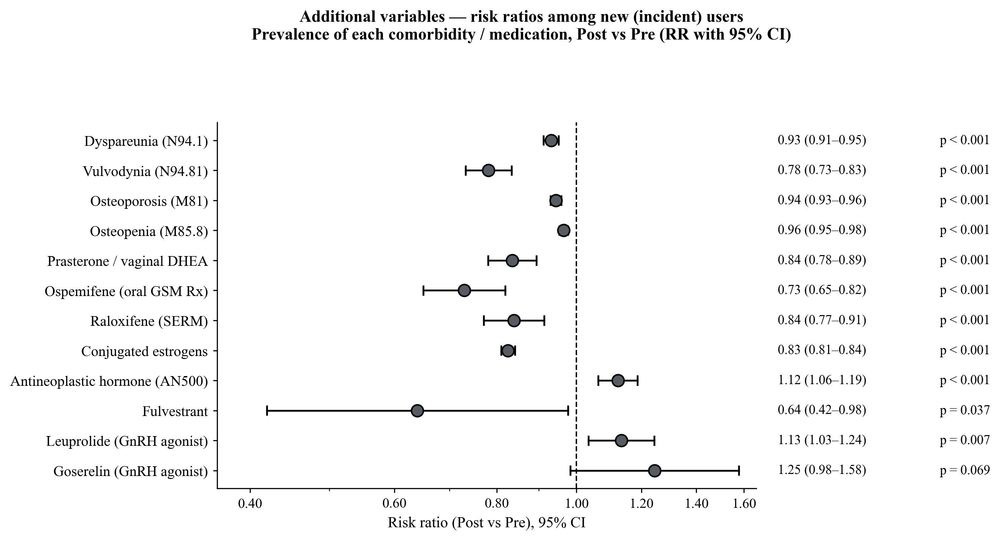

Prescribing After the Warning Disappeared
For twenty-two years, low-dose vaginal estrogen carried the same boxed warning as high-dose systemic hormone therapy — a class-wide label applied after the Women's Health Initiative, to a drug that delivers a small fraction of that dose locally. On November 11th, 2025 the FDA removed it. This study asks whether one sentence of regulatory language changed what clinicians actually prescribed, and for whom.
The question
Does removing a boxed warning change prescribing — and does the change concentrate in the patients the warning was deterring? Genitourinary syndrome of menopause affects most postmenopausal women, does not remit on its own, and is chronically undertreated; surveys repeatedly name the boxed warning as a leading reason.
The answer
Use rose promptly, led by new initiation rather than refills, and scaled with how much the warning had deterred each group: largest in breast-cancer survivors and aromatase-inhibitor users, smallest where use was already routine. Negative-control drugs fell over the same window.
How the study was built
A before-and-after comparison is the easiest study to run and one of the easiest to get wrong. Four design decisions carry this one.
1. Matched nine-month windows
Pre-period November 11th, 2024 – August 3rd, 2025; post-period November 11th, 2025 – August 3rd, 2026. Aligning by month-of-period rather than absolute date holds the strong seasonality of ambulatory gynecologic care constant and makes each post-period month comparable to its own counterpart a year earlier.
2. Incident separated from prevalent
Incident users had a vaginal-estradiol order in the window and none in the preceding year; prevalent users had received it before. A change in prescribing behavior should appear first in new decisions, while continuing use moves slowly on refill inertia. Pooling the two attenuates exactly the signal being looked for — and conflating them is one of the documented failure modes of federated-network studies.
3. A denominator that cannot drift
User counts in a federated network move when organizations join or leave it. Use is therefore expressed as a rate: vaginal-estrogen users divided by adult women with at least one ambulatory encounter (CPT 99202–99215) in the same window. The same denominator is applied to both periods, so network churn cancels.
4. Controls that can falsify the result
A positive control (the systemic estradiol patch, which shared in the same regulatory reappraisal) should move with the exposure if the effect is real and estrogen-specific. Negative controls (alendronate, levothyroxine — chronic drugs for overlapping populations of older women, unrelated to the estrogen label) should not move at all. Both predictions were made before the numbers were in.
Cohorts Table 1
Women with at least one order or administration of vaginal estradiol — cream, tablet or insert, and ring formulations by RxNorm ingredient code, deliberately excluding the higher-dose systemic ring.
| Characteristic | Total, pre | Incident, pre | Total, post | Incident, post |
|---|---|---|---|---|
| Patients, n | 192,157 | 151,483 | 190,602 | 147,950 |
| Health-care organizations, n | 69 | 69 | 63 | 63 |
| Age, mean ± SD, years | 64 ± 13 | 63 ± 13 | 63 ± 13 | 62 ± 13 |
| Body-mass index, mean ± SD | 27.7 ± 6.3 | 27.8 ± 6.4 | 27.9 ± 6.4 | 28.0 ± 6.4 |
| White race, n (%) | 154,494 (80.4) | 121,641 (80.3) | 151,910 (79.7) | 117,176 (79.2) |
| Non-Hispanic ethnicity, n (%) | 142,965 (74.4) | 111,794 (73.8) | 142,761 (74.9) | 110,371 (74.6) |
| Menopausal disorder (N95), n (%) | 123,576 (64.3) | 95,946 (63.3) | 120,688 (63.3) | 95,011 (64.2) |
| Genitourinary syndrome (N95.2), n (%) | 88,831 (46.2) | 66,832 (44.1) | 80,379 (42.2) | 60,768 (41.1) |
| Dyspareunia (N94.1), n (%) | 21,131 (11.0) | 16,267 (10.7) | 19,280 (10.1) | 14,794 (10.0) |
| Breast-cancer history (Z85.3), n (%) | 8,109 (4.2) | 6,169 (4.1) | 7,728 (4.1) | 6,099 (4.1) |
| Active breast cancer (C50), n (%) | 8,852 (4.6) | 6,898 (4.6) | 8,694 (4.6) | 6,984 (4.7) |
| Tamoxifen, n (%) | 1,862 (1.0) | 1,423 (0.9) | 1,964 (1.0) | 1,571 (1.1) |
| Aromatase inhibitor, n (%) | 4,839 (2.5) | 3,877 (2.6) | 4,857 (2.5) | 3,891 (2.6) |
| Prior hysterectomy, n (%) | 10,770 (5.6) | 8,603 (5.7) | 9,863 (5.2) | 7,933 (5.4) |
| Osteoporosis (M81), n (%) | 39,765 (20.7) | 29,672 (19.6) | 36,067 (18.9) | 27,355 (18.5) |
Table 1. Values are n (% of the corresponding cohort) unless noted. "Incident" denotes new initiation with no vaginal-estrogen order in the prior year. Race and ethnicity counts are reconstructed from network-reported percentages. The two windows are closely matched on age, BMI and comorbidity burden — the populations are comparable, which is what makes the rate comparison interpretable.
Monthly trend Figure 1 · Table 2
Across the mature November-through-April window, incident initiation rose 11.6%, total use 10.8%, and prevalent use 2.0% — the ordering a regulatory change predicts, since labels act on new decisions before they act on refills.

| Series | Nov | Dec | Jan | Feb | Mar | Apr | Nov–Apr |
|---|---|---|---|---|---|---|---|
| Incident (new) | +10.8% | +11.5% | +21.1% | +21.6% | +11.2% | −5.1% | +11.6% |
| Total (all) | +5.8% | +11.2% | +21.1% | +18.9% | +11.1% | −2.6% | +10.8% |
| Prevalent (continuing) | +0.1% | +0.6% | +10.6% | +5.3% | +0.3% | −5.1% | +2.0% |
Table 2. Percent change = post ÷ pre − 1 within each aligned month. The April dip and the omitted May–July tail fall in the incomplete data-maturation window. New initiation leads continuing use throughout.
Subgroups Figure 2 · Table 3
This is the section that separates a regulatory effect from a general rise in prescribing. A broad trend — more visits, a coding change — would lift every subgroup roughly equally. What happened instead is that the increase scaled with how much the warning had deterred each group.

| Subgroup | Rate, pre | Rate, post | Rate ratio (95% CI) | p |
|---|---|---|---|---|
| Breast-cancer history (Z85.3) | 1.76% | 2.27% | 1.29 (1.23–1.35) | <0.001 |
| Breast cancer (C50 or Z85.3) | 1.25% | 1.57% | 1.25 (1.21–1.30) | <0.001 |
| Aromatase inhibitor | 1.11% | 1.37% | 1.24 (1.15–1.33) | <0.001 |
| Hysterectomy (Z90.710/.711) | 3.84% | 4.84% | 1.26 (1.23–1.30) | <0.001 |
| GSM diagnosis (N95.2) | 43.55% | 48.97% | 1.12 (1.12–1.13) | <0.001 |
| Age < 65 (per women seen) | 2.00% | 2.50% | 1.25 (1.24–1.26) | <0.001 |
| Age ≥ 65 (per women seen) | 4.61% | 4.84% | 1.05 (1.04–1.06) | <0.001 |
Table 3. Rate = subgroup patients on vaginal estrogen ÷ all subgroup patients seen in the matched window, so the ratio reflects prescribing within the group rather than any change in the group's size. RR = post ÷ pre; two-proportion z-tests.
Who the new users were Figures 3–4 · Table 4
If the label change pulled in a different kind of patient, the case-mix of new initiators would shift. It largely did not — the composition held steady while the volume rose.


| Variable | % pre | % post | Risk ratio (95% CI) | p |
|---|---|---|---|---|
| Menopausal disorder (N95) | 63.3% | 64.2% | 1.01 (1.01–1.02) | <0.001 |
| GSM (N95.2) | 44.1% | 41.1% | 0.93 (0.92–0.94) | <0.001 |
| Postmenopausal bleeding (N95.0) | 8.6% | 8.1% | 0.94 (0.92–0.96) | <0.001 |
| Dyspareunia (N94.1) | 10.7% | 10.0% | 0.93 (0.91–0.95) | <0.001 |
| Vulvodynia (N94.81) | 1.4% | 1.1% | 0.78 (0.73–0.83) | <0.001 |
| Active breast cancer (C50) | 4.6% | 4.7% | 1.04 (1.00–1.07) | 0.030 |
| Breast-cancer history (Z85.3) | 4.1% | 4.1% | 1.01 (0.98–1.05) | 0.491 |
| Osteoporosis (M81) | 19.6% | 18.5% | 0.94 (0.93–0.96) | <0.001 |
| Osteopenia (M85.8) | 25.6% | 24.7% | 0.96 (0.95–0.98) | <0.001 |
| Tamoxifen | 0.9% | 1.1% | 1.13 (1.05–1.21) | <0.001 |
| Aromatase inhibitor | 2.6% | 2.6% | 1.03 (0.98–1.07) | 0.225 |
| Prior hysterectomy | 5.7% | 5.4% | 0.94 (0.92–0.97) | <0.001 |
| Prasterone (vaginal DHEA) | 1.2% | 1.0% | 0.84 (0.78–0.89) | <0.001 |
| Ospemifene | 0.5% | 0.3% | 0.73 (0.65–0.82) | <0.001 |
Table 4. Percentages are of the incident cohort; RR = %post ÷ %pre. Diagnoses of the established GSM population declined modestly as a share of new users — consistent with the increase reaching beyond the already-coded population. The two non-estrogen GSM therapies both fell, compatible with substitution toward vaginal estrogen, though these data cannot confirm it.
Formulation Figure 5 · Table 5
The increase was not confined to one product. Branded formulations rose disproportionately among new users; generic and unspecified products, roughly 98% of use, barely moved.

| Formulation | % pre | % post | Risk ratio | p | Cohort |
|---|---|---|---|---|---|
| Cream (Estrace) | 15.4 | 18.1 | 1.18 | <0.001 | Incident |
| Tablet / insert (Vagifem, Imvexxy) | 11.0 | 11.5 | 1.05 | <0.001 | Incident |
| Ring (Estring) | 9.1 | 9.7 | 1.06 | <0.001 | Incident |
| Cream (Estrace) | 14.4 | 17.0 | 1.18 | <0.001 | All |
| Tablet / insert (Vagifem, Imvexxy) | 10.2 | 11.2 | 1.10 | <0.001 | All |
| Ring (Estring) | 8.4 | 9.3 | 1.11 | <0.001 | All |
Table 5. Percentages are of the corresponding cohort. Formulation buckets overlap — a patient may fill more than one — and are read as prevalences rather than a partition. Generic and unspecified products (~98% of each cohort) moved negligibly and are omitted.
Control drugs Figures 6–7 · Table 6
The standing objection to any before-and-after study is that something else changed. Here the something-else is measured directly, and it points the other way.
| Drug | Role | Rate ratio | × vs vaginal estrogen |
|---|---|---|---|
| Vaginal estrogen (all) | Exposure | 1.14 | 1.00 |
| Systemic estradiol patch | Positive control | 1.47 | 1.28 |
| Alendronate | Negative control | 0.88 | 0.77 |
| Levothyroxine | Negative control | 0.88 | 0.77 |
| Ospemifene | Substitution | 0.78 | 0.68 |
| Prasterone (vaginal DHEA) | Substitution | 0.98 | 0.86 |
| Tamoxifen / raloxifene | Comparator | 0.93 | 0.82 |
Table 6. Rate = drug users ÷ women seen in the window (shared denominator). "× vs VE" is the drug's rate ratio divided by that of vaginal estrogen. The two estrogen products rose; unrelated negative controls fell about 12% over the same window, in the same clinics, among overlapping populations of older women. The main feature distinguishing the drugs that rose from the drugs that fell is that they are estrogens.


Additional variables Figure 8 · Tables 7–8
A wider panel of comorbidities and co-prescribed agents, examined for any competing explanation. None is evident: skeletal diagnoses and systemic conjugated estrogens fall along the maturing-denominator baseline, while active-cancer-treatment markers hold or rise.
| Variable | Total pre | Incident pre | Total post | Incident post |
|---|---|---|---|---|
| Dyspareunia (N94.1) | 21,131 (11.0%) | 16,267 (10.7%) | 19,280 (10.1%) | 14,794 (10.0%) |
| Vulvodynia (N94.81) | 2,907 (1.5%) | 2,082 (1.4%) | 2,189 (1.1%) | 1,589 (1.1%) |
| Osteoporosis (M81) | 39,765 (20.7%) | 29,672 (19.6%) | 36,067 (18.9%) | 27,355 (18.5%) |
| Osteopenia (M85.8) | 51,884 (27.0%) | 38,816 (25.6%) | 48,165 (25.3%) | 36,571 (24.7%) |
| Conjugated estrogens | 27,285 (14.2%) | 20,192 (13.3%) | 22,132 (11.6%) | 16,271 (11.0%) |
| Antineoplastic hormones | 2,945 (1.5%) | 2,369 (1.6%) | 3,188 (1.7%) | 2,599 (1.8%) |
| Leuprolide (GnRH agonist) | 979 (0.5%) | 850 (0.6%) | 1,118 (0.6%) | 942 (0.6%) |
| Raloxifene (SERM) | 1,642 (0.9%) | 1,179 (0.8%) | 1,294 (0.7%) | 966 (0.7%) |
Table 7. Percentages are of the corresponding cohort.

| Composite variable | Cohort | Lower bound | Upper-bound estimate | % (est.) |
|---|---|---|---|---|
| Hysterectomy | Total pre | 5,013 | 10,770 | 5.6% |
| Hysterectomy | Total post | 4,761 | 9,863 | 5.2% |
| Oophorectomy | Total pre | 2,457 | 2,909 | 1.5% |
| Oophorectomy | Total post | 2,459 | 2,859 | 1.5% |
| Aromatase inhibitor | Total pre | 2,258 | 4,839 | 2.5% |
| Aromatase inhibitor | Total post | 2,197 | 4,857 | 2.5% |
Table 8. Lower bound = largest single contributing code; upper-bound estimate = sum across approach- or agent-specific codes, which overcounts patients carrying more than one. True values lie between; the substantive conclusions are unchanged across the range, and these variables are presented as bounded estimates rather than exact counts throughout.
Limitations
- It is still a before-and-after study. The control-drug design mitigates confounding by secular trend, but it cannot exclude an unmeasured co-intervention that affected estrogens specifically and coincided precisely with the label change.
- The network lags. The most recent months are incomplete, which is why May through July were censored and primary inference rests on the mature window and on rates rather than counts.
- The population is not the country. The Global Collaborative Network is weighted toward U.S. and academic institutions and is predominantly White and non-Hispanic, so the magnitude may not generalize even where the direction does. Because the network also includes non-U.S. organizations not subject to the FDA action, the global estimate here is if anything conservative.
- Orders are not doses. Electronic-health-record orders capture prescribing intent, not dispensing or adherence. This measures what clinicians did, not what patients ultimately used.
- Some variables are bounded, not exact. Hysterectomy, oophorectomy and aromatase-inhibitor exposure rest on overlapping code sets and are best read as the ranges in Table 8.
What comes next
The most informative next step is a geographic placebo test. The FDA's action applies only to the United States, so a genuinely regulatory effect should concentrate in U.S. health-care organizations and attenuate — ideally vanish — in the international sites that make up the rest of the Global Collaborative Network. Repeating the primary rate comparison restricted to U.S. organizations and contrasting it with the global estimate reported here would either strengthen the causal case substantially or undermine it. That analysis is specified as the primary planned extension of this work.
Beyond it: extending the observation window to confirm the increase persists rather than reflecting a one-time release of pent-up demand; linking prescribing to downstream outcomes — symptom relief, urinary-tract-infection rates, and oncologic safety in the breast-cancer subgroup; and qualitative study of how oncologists and gynecologists actually changed their conversations after the announcement.
References
| # | Reference |
|---|---|
| 1 | The Women's Health Initiative Investigators. Risks and benefits of estrogen plus progestin in healthy postmenopausal women.JAMA. 2002;288(3):321–333. |
| 2 | Portman DJ, Gass MLS; Vulvovaginal Atrophy Terminology Consensus Conference Panel. Genitourinary syndrome of menopause: new terminology.Maturitas. 2014;79(3):349–354. |
| 3 | Rahn DD, Carberry C, Sanses TV, et al. Vaginal estrogen for genitourinary syndrome of menopause: a systematic review.Obstet Gynecol. 2014;124(6):1147–1156. |
| 4 | Faubion SS, Larkin LC, Stuenkel CA, et al. Management of genitourinary syndrome of menopause in women with or at high risk for breast cancer.Menopause. 2018;25(6):596–608. |
| 5 | Crandall CJ, Hovey KM, Andrews CA, et al. Breast cancer, endometrial cancer, and cardiovascular events in participants who used vaginal estrogen in the Women's Health Initiative Observational Study.Menopause. 2018;25(1):11–20. |
| 6 | Constantine GD, Graham S, Lapane K, et al. Endometrial safety of low-dose vaginal estrogens in menopausal women: a systematic review.Menopause. 2019;26(7):800–807. |
| 7 | The North American Menopause Society. The 2020 genitourinary syndrome of menopause position statement.Menopause. 2020;27(9):976–992. |
| 8 | Manson JE, Kaunitz AM. Menopause management — getting clinical care back on track.N Engl J Med. 2016;374(9):803–806. |
| 9 | Palacios S, Combalia J, Emsellem C, et al. Therapies for the management of genitourinary syndrome of menopause.Post Reprod Health. 2020;26(1):32–42. |
| 10 | U.S. Food and Drug Administration. Removal of boxed warning for low-dose vaginal estrogen products.FDA Drug Safety Communication; November 11th, 2025. |
| 11 | Zeeshan FNU, Saqlain A. FDA's 2025 removal of black box warnings on menopausal hormone therapy.Ann Med Surg (Lond). 2025. 10.1097/MS9.0000000000004749 |
| 12 | TriNetX LLC. TriNetX Global Collaborative Network: methodology and data provenance.Cambridge, MA; 2026. |
| 13 | Ludwig RJ, Anson M, Zirpel H, et al. A comprehensive review of methodologies and application to use the real-world data and analytics platform TriNetX.Front Pharmacol. 2025;16:1516126. 10.3389/fphar.2025.1516126 |
| 14 | Nassar M, Abosheaishaa H, Elfert K, et al. TriNetX and real-world evidence: a critical review of its strengths, limitations, and bias considerations in clinical research.ASIDE Intern Med. 2025. 10.71079/aside.im.03222516 |
| 15 | Joelving F. Medical students are using a popular research tool to pump out misleading studies.Science (ScienceInsider). June 24th, 2026;392(6805). |
| 16 | Wang J, Tsai KW, Lu CL, Lu KC. Analyzing clinical laboratory data outcomes in retrospective cohort studies using TriNetX.Biochem Med (Zagreb). 2025;35(3):030502. 10.11613/BM.2025.030502 |
| 17 | Liu et al. On the reported methodology in published TriNetX-based studies: an analysis of impossible index event designs.Eur J Epidemiol. 2025. 10.1007/s10654-025-01342-6 |
| 18 | Williford SE, Chan KA, Brown JS. Re: On the reported methodology in published TriNetX-based studies (correspondence).Eur J Epidemiol. 2026. 10.1007/s10654-026-01374-6 |
| 19 | Suckling J, Lethaby A, Kennedy R. Local oestrogen for vaginal atrophy in postmenopausal women.Cochrane Database Syst Rev. 2006;(4):CD001500. |
| 20 | Hsieh M-C, Lu M-C, Koo M. Mapping TriNetX-based real-world evidence publications by clinical domain and study purpose, 2018–2025: a bibliometric analysis.Healthcare (Basel). 2026;14(14):2143. 10.3390/healthcare14142143 |
About the study
Data source. TriNetX Global Collaborative Network — a federated platform aggregating de-identified electronic-health-record data from more than one hundred health-care organizations. The platform returns aggregate counts computed at each contributing site; no patient-level records leave their source. The study was exempt from institutional-review-board review, with a Downstate not-human-research determination on file.
Snapshot. All counts extracted August 3rd, 2026. Windows: November 11th, 2024 – August 3rd, 2025 and November 11th, 2025 – August 3rd, 2026.
Analysis. Two-proportion z-tests with risk ratios, risk differences and 95% confidence intervals; Cohen's h for effect size; Welch t-tests for continuous variables from summary statistics. Because the cohorts number in the hundreds of thousands, nearly every comparison is statistically significant, so effect sizes and confidence intervals are emphasized over p-values throughout. Conducted in the TriNetX Analytics environment with confirmatory computation in a fully referenced spreadsheet model in which every derived figure traces to a single raw-data source.
Authors. Henry M. Blair; Arshia Sandozi, MD. Department of Urology, Maimonides Medical Center, Brooklyn, NY.
The manuscript
Everything the manuscript rests on — design, cohorts, every table, every figure, the limitations — is on this page. The manuscript itself sits behind a passphrase while the work is unpublished; if I sent you one, it opens there. Otherwise email me.